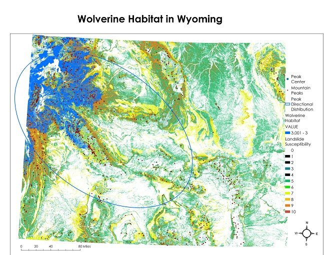

Landslide suseptibility and Wolveriene Habitat

The purpose of the two maps are to show the directional distribution of mountain peaks in Wyoming and the relation to landslide susceptibility. I also wanted to bring in a map to show wolverine range relating to the distribution of mountain peaks and landslide susceptibility.
First I found my data sources on wolverines on USGS, specifically a shapefile with wolverine preferred habitat. I started here because I recently thought I saw a wolverine den in Colorado, and was curious to see if there was any tracking on wolverines. Next, I downloaded the Wyoming Mountain peaks and Wyoming hazards shapefiles from the Wyoming State Geological Survey. These data sources would allow me to see if there were any correlations between elevation, landslides and the threat that may have on Wolverines.
After making a folder connection with all of this data in it, I checked the properties and noticed I had to change the coordinate systems to NAD_1983_UTM_Zone13N. I then used the intersect tool to make sure I was only using the wolverine data in Wyoming, and not the entire United States. Next I calculated the Central Feature tool, Inputting Mountain Peaks and selecting Elevation as my case field to see where the center of Wyoming's Mountains were. Next I used the Directional Distribution (Standard Deviation Ellipse) tool to see if there was a directional trend in Wyoming for the mountain peaks. The directional tool showed that the mountains are mostly trending north west, and the central feature tool shows a similar trend.
Wolverines prefer high elevation, snow driven watersheds. As we continue with extreme weather events, I fear that the wolverine habitat will continue to decrease due to climate factors such as slow, or fast landslide events that push them into territory they cannot survive in. Sources: https://www.wsgs.wyo.gov/pubs-maps/gis https://www.sciencebase.gov/catalog/item/4fbaad35e4b0134c9a0afc0